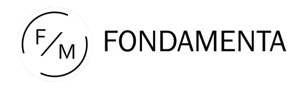
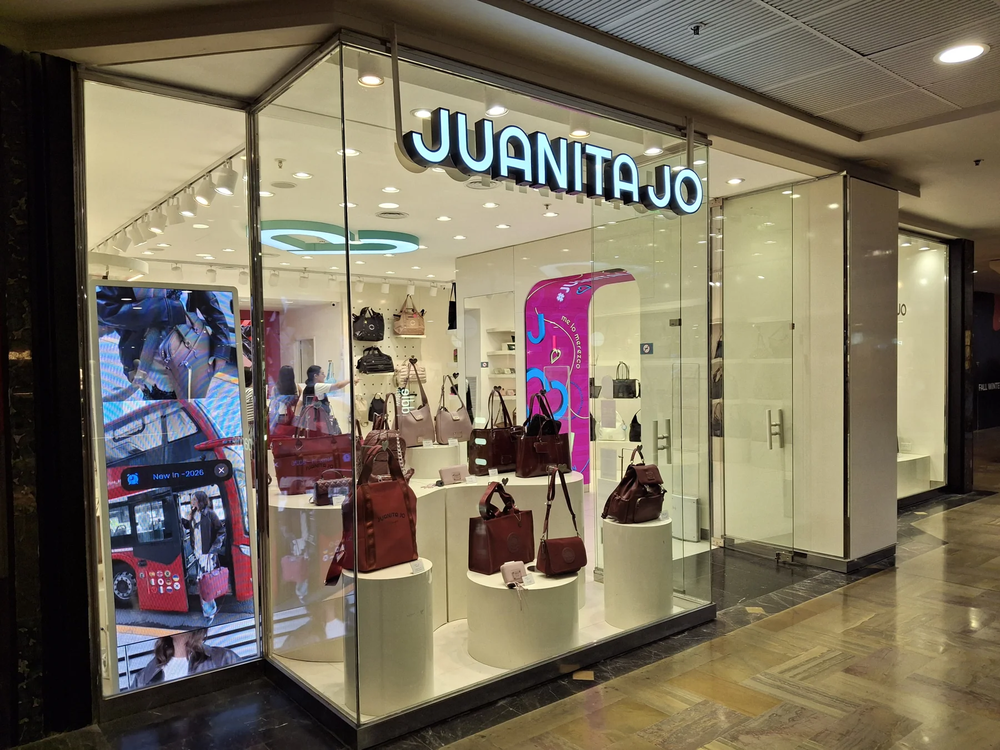

2019
Una imagen más colorida
El proyecto de 2019 interpretaba el lenguaje de la marca de esa etapa: color, gráfica y recursos decorativos con una presencia marcada en el espacio.

Contanos tu proyectoJUANITA JO · UNICENTER, BUENOS AIRES
Acompañamos a Juanita Jo en la evolución de sus espacios: desde la adaptación de una identidad existente hasta una expresión más depurada y contemporánea de la marca.

Unicenter · Local proyectado en 2025
UNA RELACIÓN EN EL TIEMPO
Nuestra relación con Juanita Jo comenzó con el proyecto de dos nuevos locales. La marca, con una trayectoria consolidada en el retail de carteras, ya contaba con una identidad visual definida. El desafío inicial fue interpretar ese lenguaje y adaptarlo a nuevos espacios, manteniendo la coherencia con sus otros puntos de venta.
Con los años, esa colaboración se convirtió en un trabajo continuo de renovación. Acompañamos nuevas aperturas, reformas y actualizaciones, repensando la expresión espacial de la marca en cada etapa.
UNICENTER · 2019 Y 2025
Dos locales en distintos pisos del mismo centro comercial. Una identidad que cambia junto con la marca.
2019
El proyecto de 2019 interpretaba el lenguaje de la marca de esa etapa: color, gráfica y recursos decorativos con una presencia marcada en el espacio.
2025
En 2025 proyectamos el nuevo local, un piso más arriba. Una base más neutra y formas de exhibición curvas dan protagonismo a las carteras y sus colores.
RENOVAR SIN PERDER IDENTIDAD
La renovación conservó elementos reconocibles de Juanita Jo, como el turquesa, el corazón y su lenguaje de iluminación, integrándolos en una propuesta más minimalista.
El mobiliario y los tonos neutros construyen un marco para el producto. El color de la marca aparece como acento y conecta esta nueva etapa con su identidad.
FABRICACIÓN Y MONTAJE
El proceso del local de 2025: piezas en fabricación y mobiliario durante el montaje, antes de incorporar los productos.
TU PRÓXIMO ESPACIO COMERCIAL
Conversemos sobre cómo llevarla al espacio.
Contanos tu proyectoVolver a proyectos